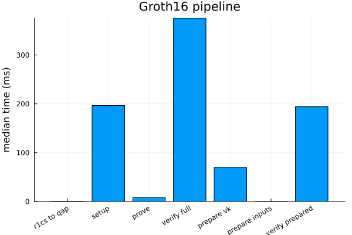
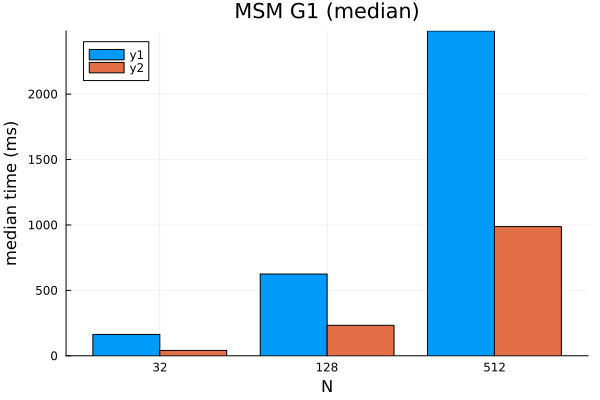

Benchmarks
The benchmarks/ project captures runtime and throughput measurements for the hottest Groth16 paths. This page summarises how to regenerate the data and shows the latest artefacts.
Running the Suite
Instantiate the root workspace:
julia --project=. -e 'using Pkg; Pkg.instantiate(workspace=true)'Run the benchmark harness (artifacts land under
benchmarks/artifacts/<run_id>/):julia --project=. benchmarks/run.jlRegenerate plots (latest run by default, or pass a run id / JSON file):
julia --project=. benchmarks/plot.jl julia --project=. benchmarks/plot.jl 2026-03-05_144036Compare two snapshots and flag regressions (20% threshold by default):
julia --project=. benchmarks/compare.jl 2026-03-05_144036 2026-03-06_091500 julia --project=. benchmarks/compare.jl 2025-09-29_121914 2026-03-05_144036 10Profile the
prove_fullpath on the deterministic benchmark fixtures:julia --project=. benchmarks/profile_prove_full.jl julia --project=. benchmarks/profile_prove_full.jl --run-id=2026-03-05_144036 --fixture=sum_of_products_small --repetitions=75Generate a one-shot markdown report (run -> plot -> compare latest-1 vs latest):
julia --project=. benchmarks/report.jl julia --project=. benchmarks/report.jl --skip-run --threshold=10
The harness writes a timestamped JSON (raw statistics) and PNG charts covering MSM, pairing, normalisation, Groth16 end-to-end timings, and prove_full fixture breakdowns. The profiling script writes text profiler dumps under the same artifact tree, but profiling remains a separate workflow from reproducible timing baselines.
Latest Snapshot (2025‑09‑29)
using JSON
json_path = joinpath(@__DIR__, "assets", "results_2025-09-29_121914.json")
results = JSON.parsefile(json_path)
keys(results)KeySet for a JSON.Object{String, Any} with 9 entries. Keys:
"pairing"
"fixed_g2"
"msm_g2"
"pairing_single"
"norm_g2"
"groth16"
"norm_g1"
"msm_g1"
"fixed_g1"Each entry contains per-benchmark medians, deviations, and configuration metadata (threading, window sizes, curve parameters). Refer to benchmarks/results_2025-09-23_204214_env.md for the environment capture that accompanied the latest run.
Plots


